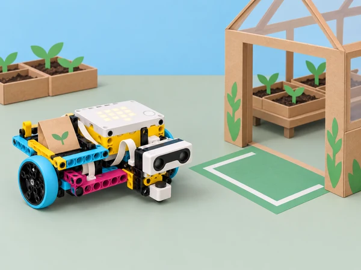

La classe crea una maqueta d’un viver escolar per transportar un paquet fictici de llavors des de la taula de preparació fins a una zona de recepció. El prototip SPIKE Prime espera una ordre de la persona operadora mitjançant el sensor de força, avança amb una càrrega lleugera i utilitza el sensor de distància per reduir el recorregut o aturar-se davant d’una barrera de cartó. L’equip ha de decidir quines entrades pot llegir, quines condicions les interpreten i com evitar que una lectura incerta es convertisca en una acció no desitjada.
Aquesta situació adapta les sis lliçons de la unitat 3 Sensor Control de LEGO Education Introduction to Python Programming · Course 1: Start Sensing, Charging Rhino, Cart Control, Safe Delivery, Grasshopper Troubles i Ideas to Help Your Grasshopper. Conserva el treball amb sensor de força i condicionals, relació entre potència i moviment, sensor de distància/ultrasons, ús segur dels sensors en un model mòbil, depuració d’un prototip i feedback de millora. El context de viver i les dades són simulats; no es presenta el robot com a transportador autònom ni com a sistema de seguretat.
Entrada: dada rebuda pel programa, com ara la pressió del sensor. Condicional: instrucció que tria una acció segons si una expressió és vertadera o falsa. Llindar: valor a partir del qual s’activa una regla. Ultrasons: so d’alta freqüència usat pel sensor per estimar separació respecte d’un objecte. Potència: intensitat ordenada al motor, que no determina per si sola la velocitat real. Fals positiu/negatiu: activació o absència d’activació que no concorda amb el criteri de prova.
# Pseudocodi conceptual, no és una API executable de SPIKE
si s'ha confirmat_l'ordre:
avançar_a_velocitat_baixa()
si distancia_llegida < llindar_d'aturada:
aturar_i_mostrar_arribada()Les crides reals del sensor, lectura no disponible, ports i motors varien segons la versió de l’app SPIKE. Consulteu la Knowledge Base instal·lada i eviteu assumir que una lectura absent equival a zero: definiu què fa el robot davant d’una lectura invàlida i com pot aturar-lo manualment una persona.
Un set LEGO Education SPIKE Prime 45678 per equip, hub carregat, base de dos motors o plataforma estable, sensor de força, sensor de distància, peces per a un suport senzill de càrrega, paquet gran i lleuger de cartó/paper, cartó per a barrera i topalls tous, cinta de paper, regla o cinta mètrica, diari d’enginyeria i dispositiu amb l’app SPIKE que permeta Python i consola. Eviteu càrregues amb llavors reals, terra, aigua o elements menuts; no necessitem el sensor de color en aquest repte.
Prepareu un carril pla de menys d’un metre, amb marge lateral, punt d’inici marcat, una barrera gran i mat, i zona de parada lluny de la vora. Col·loqueu el sensor de distància frontalment i sense obstruccions pròximes al camp de lectura; proveu cartó perpendicular i en angle per mostrar variació. Fixeu un llindar inicial conservador, executeu sense càrrega primer i a velocitat baixa. Comproveu la parada del programa, el cablejat i els ports abans d’afegir moviment. Si no hi ha Python o sensor disponible, l’alumnat pot fer les mateixes taules amb lectures preparades, però identifiqueu-ho com a simulació.
Rols rotatius: Python/condicions, construcció/seguretat, mesura/registre i observació de feedback. Cada prova ha d’indicar el punt d’inici, càrrega, llindar, potència seleccionada, superfície i posició de l’obstacle; canvieu-ne només una per iteració.
Activació (7 min): feu una breu dinàmica de “comença/congela” amb una targeta que l’adult pressiona i allibera; l’alumnat descriu quina observació marca cada estat. Sense córrer ni tocar altres persones, traduïu-ho a “esperar ordre / començar / aturar”. Predicció de sensor (8 min): observeu el sensor de força i formuleu què podria distingir: premut, soltat, colpejat. Diferencieu allò que heu observat d’allò que suposàveu. Python (18 min): connecteu el sensor al port confirmat, obriu un exemple oficial de la Knowledge Base i llegiu-ne cada línia. En un primer programa imprimiu l’estat si la funció ho permet; en un segon, afegiu una condició perquè una pressió curta active una llum de confirmació o permeta iniciar una acció motoritzada breu. No useu motor fins que la lògica d’entrada funcione amb actuadors quiets. Proves (8 min): feu cinc proves amb pressió clara, sense tocar-lo i amb contacte accidental molt suau; anoteu estat esperat i retorn observat. Eixida (4 min): escriviu una condició en paraules i indiqueu quina resposta segura convé si el sensor no respon.
Repte inspirat en Charging Rhino (5 min): imagineu una base que necessita “carregar-se” abans de portar el paquet; relacioneu força/pressió amb una ordre explícita, no amb energia elèctrica real ni amb cap animal automatitzat. Prova mecànica (10 min): sense obstacle, mesureu el recorregut amb una potència baixa i temps fix. Feu tres repeticions i registreu distància, dispersió i irregularitats. Comparació controlada (18 min): repetiu amb un segon valor de potència, mantenint temps, càrrega, superfície i punt d’inici; establiu una parada manual i un límit segur. Compareu distància i temps, i expliqueu per què la potència ordenada no és una velocitat física calibrada. Lectura del sensor de força (8 min): afegiu inici per pressió però manteniu la resta inalterada; demaneu a una persona operadora que inicie cada intent. Conclusió (4 min): anoteu quina configuració sembla controlable dins d’aquesta pista, no quina seria “millor” universalment.
Investigar (7 min): compareu com una persona pot estimar si hi ha espai davant d’un vehicle i què necessita fer un robot si l’obstacle és més pròxim del que esperava. Lectures sense moviment (12 min): connecteu el sensor de distància; poseu una barrera de cartó a tres posicions mesurades amb regla i registreu la lectura retornada, unitat i diferència. Repetiu una posició amb el cartó perpendicular i lleugerament inclinat. No toqueu ni tapeu el sensor durant la lectura. Programa de control (16 min): planifiqueu “llegir; si lectura vàlida i menor que el llindar, aturar; si no, avançar molt poc; tornar a llegir”. Implementeu primer la branca de decisió amb motors quiets i missatges de consola. Després afegiu moviment curt, a potència baixa i amb supervisió. Casos límit (7 min): proveu obstacle llunyà, pròxim, superfície obliqua, absència d’objecte en rang i lectura invàlida simulada. Definiu parada segura explícita. Eixida (3 min): justifiqueu el llindar segons dades de la vostra prova.
Especificació (10 min): el prototip parteix d’una línia, espera pressió de la persona operadora, avança amb un paquet lleuger, llig una barrera i s’atura abans de tocar-la; la persona confirma l’arribada. Fixeu criteris: queda dins del carril, porta la càrrega sense desplaçar-la, no xoca i té parada manual. Pseudocodi i taula (10 min): detalleu estats, lectures, llindar i eixides abans de programar. Separeu “no hi ha lectura” de “no hi ha obstacle”. Implementació per capes (20 min): proveu el sensor de força; després el de distància amb motores quiets; després motor en recta sense càrrega; finalment combineu inici, motor i aturada amb paquet. L’adult comprova el codi i la pista entre capes. Proves de seguretat (15 min): feu tres intents amb la barrera en una mateixa posició, tres amb una altra i una prova amb el paquet retirat. Registreu aturada, contacte, desviació lateral i dades de sensor. Si arriba massa ràpid, reduïu velocitat/recorregut abans d’acostar l’obstacle. Extensió (fins a 90 min): dissenyeu una maqueta de viver amb dues parades àmplies i ajusteu el flux amb una targeta de “confirmar”, sense afirmar que el robot evita qualsevol persona o obstàcle real.
Observació (5 min): reviseu el model d’entrega i el cicle de prova. El títol oficial introdueix problemes del prototip “grasshopper”; ací el transformem en una base que fa un avanç curt erràtic o atura fora de la zona. Classificació de possibles causes (10 min): agrupeu pistes en maquinari/port, orientació i lectura del sensor, llindar/condició, potència/temps i geometria/rodes. No canvieu totes les categories de cop. Estacions de diagnòstic (18 min): investigueu tres símptomes: sensor en port diferent, barrera mal orientada i llindar massa estricte. Els errors de connexió s’inspeccionen amb motors aturats. Per cada cas, formuleu hipòtesi, proveu la lectura a mà o amb consola i canvieu només una causa. Retest (8 min): repetiu el mateix inici i obstacle tres voltes; anoteu si l’error es manté. Reflexió (4 min): distingiu error de codi, dada/sensor i resposta mecànica; identifiqueu què no es pot concloure amb una sola prova.
Preparar una revisió (7 min): mostreu especificació, pseudocodi, configuració del llindar i dades d’almenys tres proves, inclosa una fallida. Intercanvi (10 min): una altra parella prediu què passarà, observa un intent i formula feedback basat en el registre: “he vist que…”, “el criteri diu…”, “encara provaria…”. No toca el robot ni edita el programa dels autors. Decisió (5 min): l’equip autor tria un suggeriment, n’explica el motiu i registra una alternativa aparcada. Iteració (12 min): fa un sol canvi a llindar, potència, suport del sensor o topall; repeteix el cas problema i un cas de control. Compartir (3–8 min): comuniqueu canvi, resultat i límit pendent. L’objectiu és usar perspectives externes per refinar disseny, no que tots els prototips siguen idèntics.
El dossier inclou mapa de ports, diagrama d’estats, pseudocodi, valors de sensor amb unitats, comprovació de llindar, taula potència/temps/distància, codi Python comentat, casos vàlids i invàlids, registre d’aturada i desviació, depuració d’una causa, feedback, canvi i retest. El producte és un prototip de taula amb una ruta de lliurament de llavors simulada, una targeta d’operació i una explicació de les condicions en què s’ha provat.
Avalueu: lectura de sensor (relaciona mesura, unitat i situació de prova); condicional (correspon entrada amb acció i defineix resposta per a lectura invàlida); integració segura (combina sensor i motor amb llindar documentat i parada manual); i depuració/comunicació (prova causes separades, dona feedback concret i reconeix límits). Quatre nivells: necessita modelatge, avança amb suport, treballa amb autonomia i transfereix/justifica. Un prototip que s’atura abans d’arribar pot demostrar assoliment si la decisió i les dades són coherents amb l’especificació.
Oferiu lectura de dades en taula impresa, simulació d’entrades en paper, pseudocodi dictat o compartit, pantalla ampliada i rols equivalents de prova, disseny i registre. Utilitzeu targetes amb paraula, símbol i forma, no només color. La pressió s’aplica suaument i el sensor no es colpeja. Moviments sempre curts, lents, sobre superfície plana i amb supervisió; mans lluny de rodes, eixos i mecanismes. No es fan proves amb animals, plantes vives, persones com a obstacles, escales ni passadissos oberts. No es capturen imatges ni dades personals. La maqueta no és un dispositiu certificat d’evitació ni es pot deixar funcionant sense supervisió.
Adapta les sis lliçons de la unitat 3 Sensor Control del curs LEGO Education Introduction to Python Programming · Course 1: Start Sensing, Charging Rhino, Cart Control, Safe Delivery, Grasshopper Troubles i Ideas to Help Your Grasshopper. La guia oficial especifica force sensor i condicionals per a *Start Sensing*; sensor de distància, moviment i ultrasons per a *Cart Control*; investigació de potència i moviment per a *Charging Rhino* i *Safe Delivery*; i depuració/feedback per a les dues darreres lliçons. El context de viver, el guió, instruments d’avaluació i imatge són originals. Les API i la resposta a lectures absents depenen de la versió local de SPIKE i s’han de validar abans de classe; no es copien les construccions ni pàgines d’alumnat LEGO.